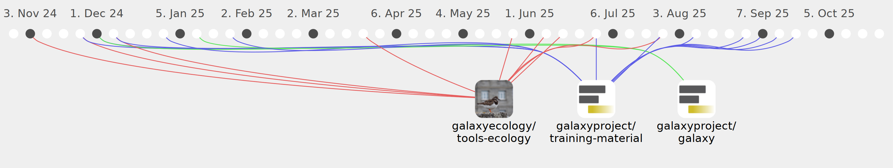

Marie59

Commits all-time: 681
Commits last year: 92

(48)
- 3bfe3bf
- a54328a
- ecc01d1
- beea499
- c715ca2
- 261310f
- 42f6f2c
- cdb9793
- 99f1fd4
- 835d3c6
- 52eeaf3
- a253e12
- 86f85de
- 23e2f0c
- 05c2972
- 8e90119
- 9c2cb50
- aea47c7
- 9c9b1be
- 80fbf63
- ab4a6fe
- 16644c4
- 7706359
- 24d9427
- 05f8c68
- 77a0e61
- 15b9253
- 413d0cd
- 0996ec3
- 2ff8edb
- f3d1f24
- 1d79636
- 436bfa9
- ced737b
- 38f258b
- 6ece159
- 03e7755
- e37c39b
- bf6cd39
- 99c51ac
- eb824f5
- f1fd9a1
- 2847958
- 2eaed91
- cde4a15
- 69b87d4
- 0d0e1dd
- 9439bd5
(44)
- 05b78da
- b1e174e
- 2071251
- 0bb3a02
- a2c00b4
- 243c61f
- 95a0eac
- 5d4b86b
- 424a71b
- 6560cf7
- 7437443
- f29d705
- c060110
- a6ceb49
- 3236c3e
- 6d0506b
- ad4dc56
- 3fb1dd0
- cf837bc
- f7b600a
- 6cd4311
- d12d97d
- 3ae91b5
- 114c62e
- fdd6682
- 82c568b
- 2924616
- 2af7461
- ffa4ccc
- 6474521
- f7fdd6e
- 76c43bb
- 38a0794
- e020653
- 1bf1ea9
- 5398bda
- d43c29f
- 80dcafd
- 496ac70
- b08ffb9
- 84387d7
- 97d5871
- a584472
- 08928ef